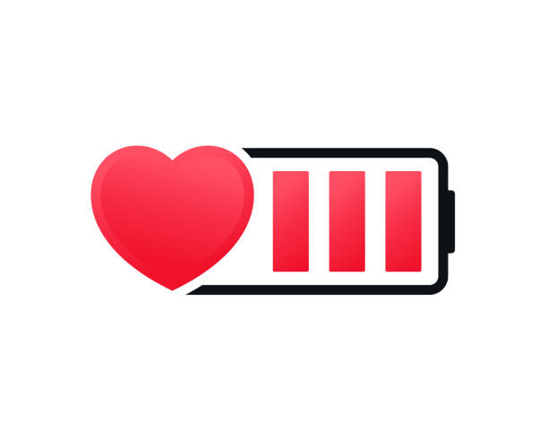

TU GUÍA TECNOLÓGICA ESCOLAR
Bienvenido a TecnoAyuda
Explora consejos, trucos y recursos esenciales para aprovechar al máximo tus dispositivos electrónicos y computadoras.
IDEAS PRÁCTICAS
GUÍAS PARA COMPUTADORAS
TRUCOS PARA MÓVILES

Tips Semanales
Tip 1: Mantenimiento Preventivo
📌 Limpieza interna y externa
Usa aire comprimido para eliminar el polvo de los ventiladores y componentes internos.
Limpia la pantalla y teclado con un paño de microfibra ligeramente humedecido con alcohol isopropílico.
Evita comer cerca de tu computadora para prevenir la acumulación de residuos.

Tip 2: Seguridad Digital
🔒 Protege tu información personal
Usa contraseñas seguras con combinación de letras, números y caracteres especiales.
Activa la autenticación en dos pasos en todas tus cuentas importantes.
Evita descargar software de sitios no confiables para prevenir malware.
Tip 3: Optimización del Rendimiento
⚡ Acelera tu PC y evita ralentizaciones
Desinstala programas que no uses para liberar espacio.
Configura el inicio de Windows para evitar que muchos programas se ejecuten automáticamente.
Usa un disco SSD en lugar de un HDD para mejorar la velocidad del sistema.
Tip 4: Actualizaciones Constantes
🔄 Mantén tu sistema operativo y programas al día
Activa las actualizaciones automáticas para recibir los últimos parches de seguridad.
Actualiza tus drivers (controladores) regularmente para evitar errores de compatibilidad.
Revisa también las actualizaciones de tu antivirus para una mejor protección.

Tip 5: Buenas Prácticas de Almacenamiento
🗂️ Organiza tus archivos y respáldalos
Clasifica tus documentos en carpetas temáticas (trabajo, estudios, personales, etc.).
Elimina archivos duplicados o innecesarios para ahorrar espacio.
Haz copias de seguridad (backups) periódicamente en discos externos o en la nube.

Tip 6: Cuida la Batería de tu Laptop
🔋 Extiende la vida útil de la batería
Evita mantener el cargador conectado todo el tiempo si ya está al 100%.
Usa el modo "ahorro de energía" cuando trabajes sin tareas exigentes.
Realiza ciclos de carga completos (de 0% a 100%) de vez en cuando para calibrar la batería.

Tip 7: Cuida tus puertos y conexiones
🔌 Evita daños físicos en tu equipo
No fuerces los cables USB o HDMI al conectarlos; asegúrate de que estén alineados correctamente.
Desconecta los dispositivos con cuidado, no tirando del cable sino del conector.
Evita tener múltiples cables tensos o cruzados alrededor del equipo, ya que pueden dañar los puertos.
Tip 8: Limpieza Digital
🧹 Organiza y libera espacio en tu equipo
Elimina archivos duplicados o temporales usando herramientas como CCleaner o el liberador de espacio de Windows.
Desinstala aplicaciones que no utilices con frecuencia.
Vacía la papelera de reciclaje y elimina archivos pesados que ya no necesitas.

Tip 9: Protección al Navegar
🌐 Navega seguro por internet
Instala una extensión de bloqueador de anuncios para evitar sitios maliciosos.
No ingreses datos personales en sitios sin certificado de seguridad (deben comenzar con "https://").
Ten cuidado con los pop-ups falsos que imitan alertas del sistema.

Tip 10: Ergonomía en el Espacio de Trabajo
🪑 Cuida tu postura al usar la computadora
Ajusta la altura de tu silla para que tus pies queden apoyados completamente.
Mantén la pantalla al nivel de los ojos para evitar forzar el cuello.
Toma descansos breves cada 30-40 minutos para estirarte y mover el cuerpo.

Tip 11: Uso Responsable del Teléfono Móvil
📵 Evita el uso excesivo y mejora tu bienestar digital
Establece horarios sin pantalla, como durante las comidas o antes de dormir.
Activa el modo “No molestar” al estudiar o trabajar para evitar distracciones.
Usa apps de bienestar digital para monitorear tu tiempo frente a la pantalla.

Tip 12: Reconocimiento de Señales de Fallos Técnicos
⚠️ Detecta problemas antes de que sea tarde
Si tu computadora se calienta mucho o hace ruidos extraños, es momento de revisarla.
Pantallazos azules o reinicios inesperados pueden indicar errores de hardware o software.
Mantén respaldos frecuentes para evitar pérdida de datos ante fallos inesperados.

Recursos
Recurso 1
Aclamamos este video en el que te muestran cómo realizar mantenimiento a tu equipo de cómputo.
Recurso 2
Te dejamos esté video sobre seguridad en internet y poder prevenir que tú información sea robada.
Recurso 3
En esté video se te explicará como optimizar tu equipo de computo y evitar problemas de lentitud.
📌 Los videos utilizados en esta sección pertenecen a los siguientes canales:
Canal: DigitalAcerca de
Nuestro Equipo
Somos estudiantes de la Universidad Autónoma del Estado de México del Valle de Teotihuacán y buscamos promover el buen uso de los dispositivos electrónicos que tenemos al alcance y que utilizamos diariamente.
Miembros del Equipo
- Jorge Eduardo Cristobal de Jésus - Leader
- Edgar Gonzalez Sanchez - Content Creator
- Oscar Moreno Pérez - Developer
- Carlos Daniel Benitez Gonzalez - Content Creator
- Joshua Quezada Salas - Content Creator